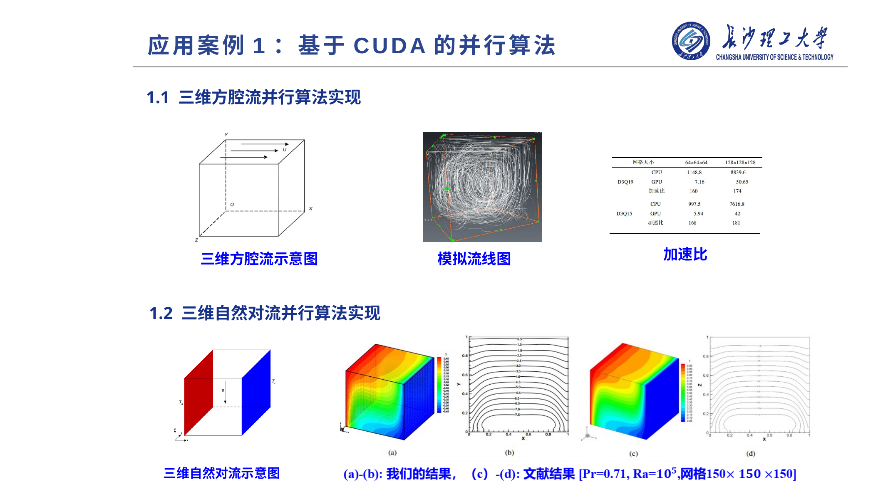
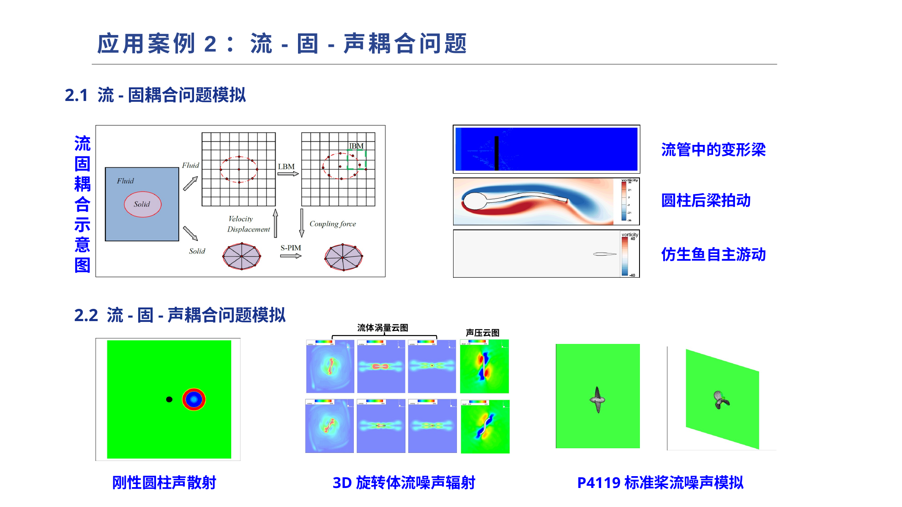
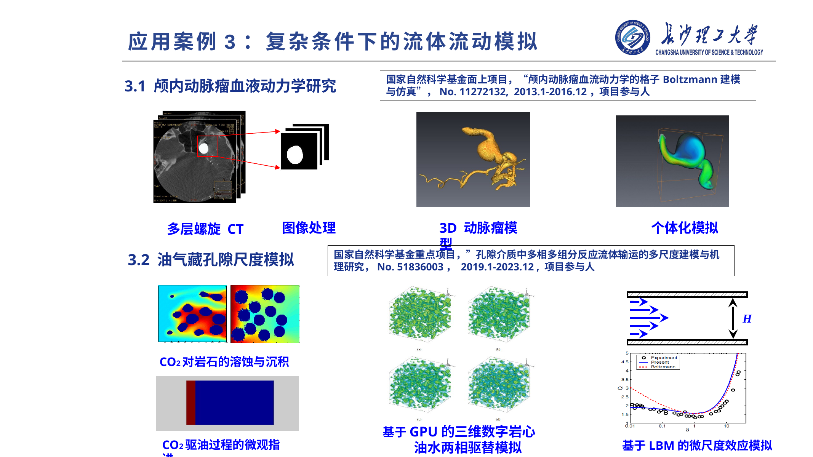
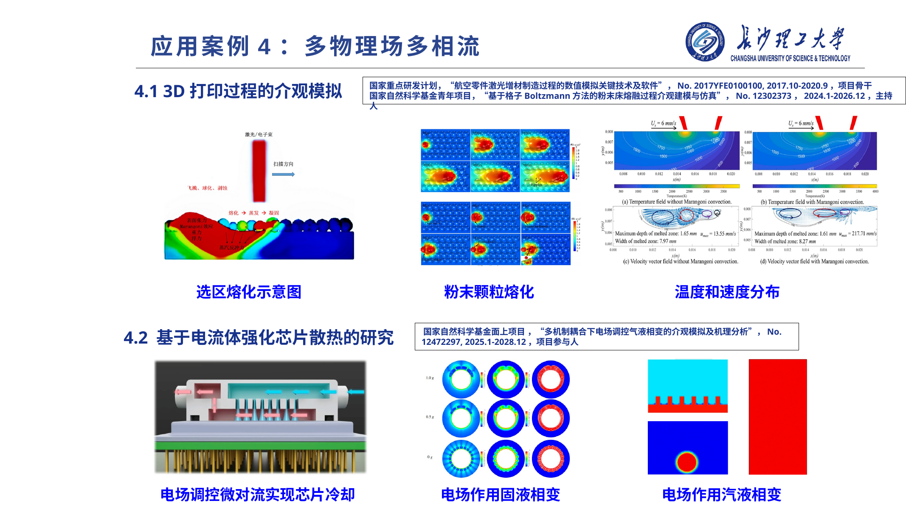
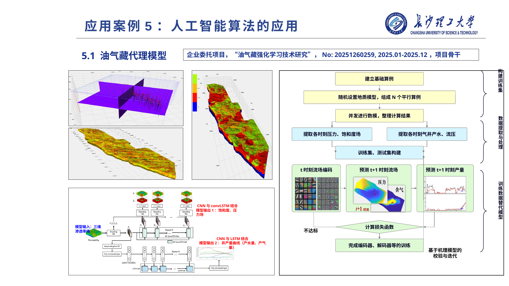
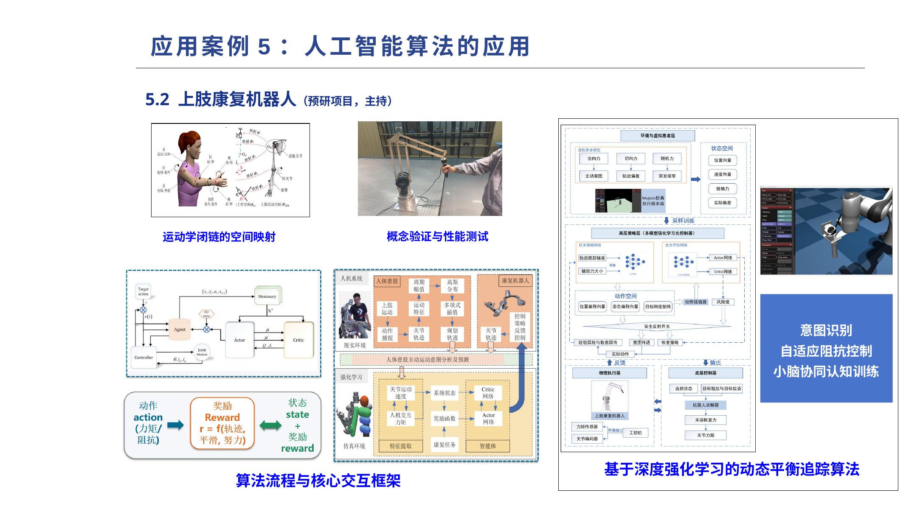

我的研究工作主要围绕格子 Boltzmann 方法（Lattice Boltzmann Method, LBM）及其在复杂流动与多物理场耦合问题中的应用展开。研究工作以介观建模和高性能数值计算为基础，关注复杂边界、多相多组分、流固声耦合、生物医学流动、油气藏孔隙尺度输运以及人工智能辅助建模等问题，服务于航空航天、能源动力、生物医学工程和智能装备等应用场景。
从整体上看，研究主线可以概括为：以 LBM 为核心数值方法，以 GPU 并行计算和人工智能算法为重要工具，面向复杂工程问题建立稳定、高效、可扩展的数值模拟与预测模型。
一、基于 CUDA 的高性能并行算法
复杂三维流动问题通常具有网格规模大、时间推进步数多、计算量高等特点。针对这一问题，我开展了基于 CUDA 的并行算法研究，将格子 Boltzmann 方法的局部演化、碰撞迁移和边界处理过程映射到 GPU 并行架构上，以提高大规模三维流动模拟的计算效率。
相关工作主要包括：
- 三维方腔流并行算法实现：围绕经典三维方腔流问题，构建 GPU 加速求解框架，对流线结构、速度场分布和加速比进行分析；
- 三维自然对流并行算法实现：针对热浮力驱动流动，建立三维自然对流并行计算模型，并与文献结果进行对比验证。
这一方向的目标是提升复杂流动模拟的计算效率，为后续多物理场、多相流和大规模工程问题模拟提供高性能计算支撑。

二、流-固-声耦合问题模拟
流体与结构之间的相互作用广泛存在于工程和自然系统中，例如弹性梁振动、仿生鱼游动、旋转机械噪声和螺旋桨流噪声等。针对这类问题，我关注流场、结构运动和声场之间的耦合机制，开展流-固耦合以及流-固-声耦合数值模拟研究。
在流-固耦合方面，主要研究对象包括：
- 流管中的变形梁；
- 圆柱后柔性梁拍动；
- 仿生鱼自主游动。
在流-固-声耦合方面，进一步关注流动诱导噪声和声传播问题，研究对象包括：
- 刚性圆柱声散射；
- 三维旋转体流噪声辐射；
- P4119 标准桨流噪声模拟。
该方向的核心在于建立流场、结构动力学和声学传播之间的统一数值模拟框架，为水下航行器、旋转机械、仿生推进和低噪声设计等问题提供理论与计算基础。

三、复杂条件下的流体流动模拟
复杂流体流动往往伴随真实几何边界、多尺度结构和多物理过程耦合。围绕这一问题，我开展了生物医学流动和油气藏孔隙尺度流动模拟研究。
3.1 颅内动脉瘤血液动力学研究
针对颅内动脉瘤等复杂血管几何中的血流动力学问题，研究流程包括医学图像获取、图像处理、三维动脉瘤模型重建以及个体化数值模拟。通过对局部流场结构、壁面剪切应力和血液动力学特征进行分析，可以为动脉瘤风险评估和个体化诊疗提供计算参考。
相关项目支撑包括：
- 国家自然科学基金面上项目“颅内动脉瘤血流动力学的格子 Boltzmann 建模与仿真”，No. 11272132，2013.1—2016.12，项目参与人。
3.2 油气藏孔隙尺度模拟
在油气藏开发过程中，孔隙尺度的多相多组分输运、CO₂ 驱替、岩石溶蚀与沉积等过程对宏观采收率具有重要影响。围绕这一问题，我参与了基于 GPU 的三维数字岩心模拟、油水两相驱替模拟、CO₂ 驱油微观指进过程模拟以及微尺度效应建模研究。
相关项目支撑包括：
- 国家自然科学基金重点项目“孔隙介质中多相多组分反应流体输运的多尺度建模与机理研究”，No. 51836003，2019.1—2023.12，项目参与人。

四、多物理场多相流模拟
多相流问题通常涉及相界面演化、热质传递、相变、外场调控和复杂边界作用，是能源、材料和电子器件热管理等领域的重要基础问题。我主要围绕 3D 打印过程介观模拟和电流体强化芯片散热开展研究。
4.1 3D 打印过程的介观模拟
在激光增材制造和粉末床熔融过程中，粉末颗粒熔化、熔池流动、温度场演化和界面变形等过程高度耦合。基于 LBM 的介观模拟方法能够较好地描述粉末颗粒熔化、温度与速度分布以及局部流动结构，为理解增材制造过程中的传热传质机理提供数值工具。
相关项目支撑包括：
- 国家重点研发计划“航空零件激光增材制造过程的数值模拟关键技术及软件”，No. 2017YFE0100100，2017.10—2020.9，项目骨干；
- 国家自然科学基金青年项目“基于格子 Boltzmann 方法的粉末床熔融过程介观建模与仿真”，No. 12302373，2024.1—2026.12，主持人。
4.2 基于电流体强化芯片散热的研究
随着芯片功率密度不断提高，传统散热方式面临较大挑战。电场调控微对流为强化芯片冷却提供了新的思路。围绕这一问题，我关注电场作用下的微对流调控、固液相变和汽液相变过程，研究外电场对流动结构、相界面演化和传热效率的影响。
相关项目支撑包括：
- 国家自然科学基金面上项目“多机制耦合下电场调控气液相变的介观模拟及机理分析”，No. 12472297，2025.1—2028.12，项目参与人。

五、人工智能算法的应用
在复杂工程模拟中，高保真数值模型往往计算成本较高，难以直接用于快速预测、实时优化和智能决策。因此，我也关注人工智能算法与机理模型的结合，探索数据驱动方法在复杂流动预测和智能控制中的应用。
5.1 油气藏代理模型
针对油气藏数值模拟耗时长的问题，研究思路是以三维渗透率场等地质参数作为输入，结合 CNN、LSTM 和 ConvLSTM 等深度学习结构，构建能够预测饱和度场、压力场以及井产量曲线的代理模型。
基本流程包括：
- 建立基础算例，随机设置地质模型，形成多个平行算例；
- 并发开展数值模拟，提取各时刻压力场、饱和度场和井产量数据；
- 构建训练集与测试集，训练编码器、解码器和时序预测网络；
- 利用机理模型对预测结果进行校验与迭代优化。
相关项目支撑包括：
- 企业委托项目“油气藏强化学习技术研究”，No. 20251260259，2025.01—2025.12，项目骨干。

5.2 上肢康复机器人
在智能康复装备方向，我开展了上肢康复机器人预研项目，重点关注基于深度强化学习的动态平衡追踪算法、运动意图识别、自适应阻抗控制以及小脑协同认知训练等问题。
该方向的研究重点包括：
- 建立运动学闭链的空间映射关系；
- 设计动态平衡追踪与自适应控制算法；
- 构建意图识别与人机交互框架；
- 开展概念验证与性能测试。
该研究面向康复训练中的主动参与、柔顺交互和个体化控制需求，探索人工智能算法在智能康复机器人中的应用潜力。
